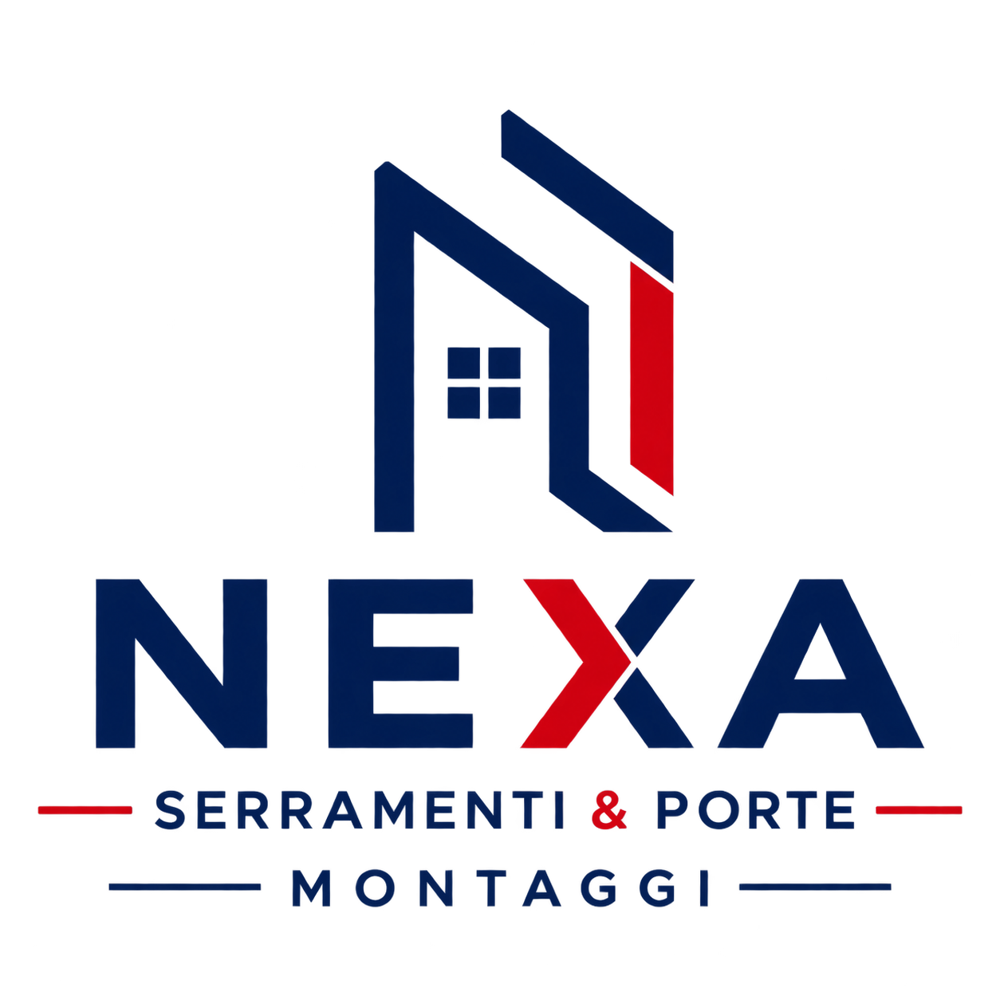

Serramenti
Montaggio e posa di infissi in PVC, alluminio e legno, con cura delle finiture e degli ambienti.

Posa, montaggio e assistenza per serramenti, porte e chiusure. Una squadra organizzata per privati, rivenditori e imprese.
Cosa facciamo
Interveniamo dove servono esperienza, attenzione ai dettagli e continuità operativa. Dalla singola abitazione al supporto continuativo per aziende del settore.
Montaggio e posa di infissi in PVC, alluminio e legno, con cura delle finiture e degli ambienti.
Installazione, regolazione e rifinitura di porte e sistemi di chiusura per spazi residenziali e professionali.
Persiane, tapparelle, grate, cancelli e soluzioni tecniche per protezione e comfort.
Regolazioni, sostituzioni e interventi per ripristinare funzionalità, tenuta e sicurezza.
La posa non finisce al fissaggio: allineamenti, sigillature e pulizia completano il lavoro.
Squadre operative per picchi di lavoro, commesse programmate e collaborazioni continuative.
Metodo Nexa
Dalla prima verifica alla consegna, condividiamo responsabilità e avanzamento. Meno sorprese, più controllo.
Raccogliamo esigenze, misure, tempi e condizioni operative.
Pianifichiamo squadra, materiali e priorità della commessa.
Eseguiamo il lavoro con precisione, ordine e rispetto degli spazi.
Controlliamo funzionamento, finiture e corretta consegna.
Partner operativo
Per rivenditori, produttori e imprese, Nexa è un riferimento operativo affidabile: assorbe carichi di lavoro, segue il cantiere e tutela il rapporto con il cliente finale.
Disponibilità e sopralluoghi
Indica luogo, tipo di intervento e tempistiche: prepariamo il confronto con le informazioni che servono davvero.